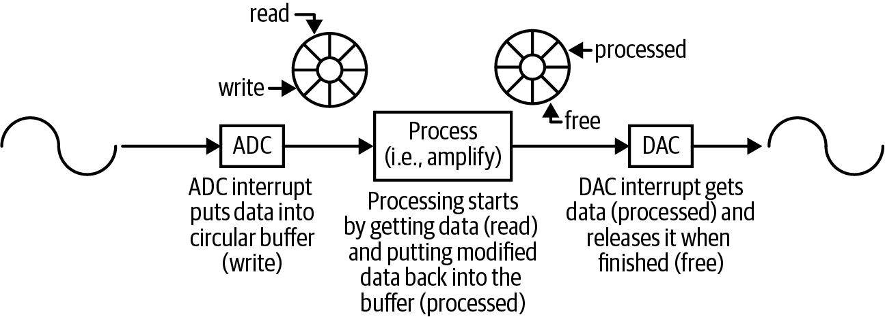
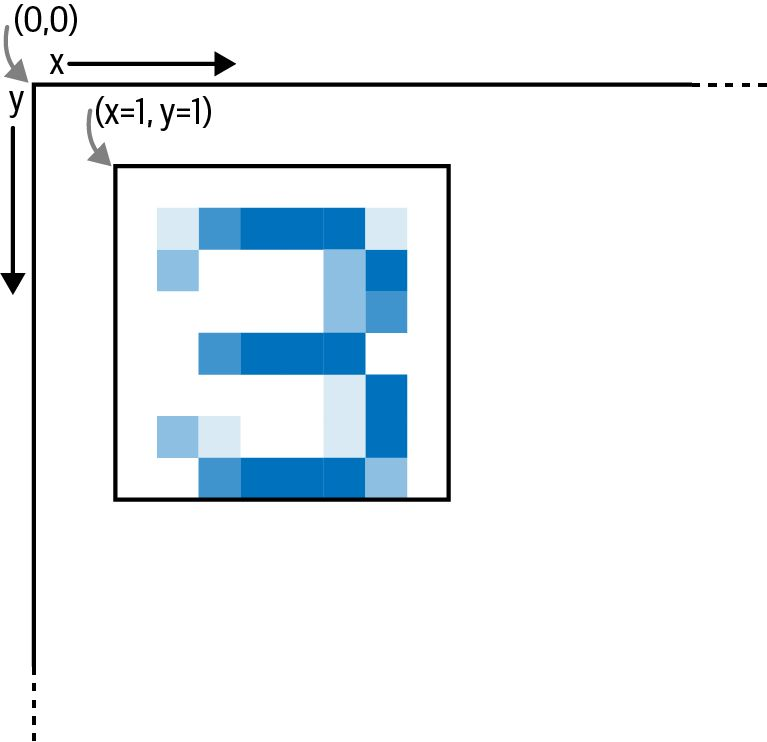

第10章 构建互联设备
Making Embedded Systems — Elecia White 著 | AI 辅助翻译
构建设备联网
无论你面对的是物联网设备、无处不在的传感器、分布式系统还是边缘计算，你的设备都将连接到一个更广阔的世界。它可能是一个封闭系统，也可能是整个互联网。无论哪种方式，突然之间就会涌现出许多新的问题和功能。 虽然你的连接机制对系统设计很重要，但一旦你连接上了，你就需要考虑如何将数据传入和传出设备、远程更新代码，以及监控整个系统的健康状况。哦，当然，别忘了安全。
远程连接
从你的处理器的视角来看，云服务器或主机计算机只是另一个需要通信的对象，和其他外设没什么不同。当然，主机可能会干预你的设备，比如更改处理器的代码或指示它将电机移动到不同的位置。但所有这些都只是数字通信而已。 事实上，任何你的处理器通过数字接口向其发送字节的东西都有自己的处理器。你通过SPI控制的电机和你通过I2C读取的湿度传感器，各自都有自己的处理器。对那些处理器而言，你的处理器就是一台主机计算机。 正如你的每个外设都有文档化的接口一样，你的系统与主机的接口也应该有相当完善的文档（即使你控制着两端）。设置好文档化的接口可以让两个系统独立地变化（只要接口保持不变）。至于实现，第3章中的命令解释器是一个很好的起点。 随着越来越多的日常物品进入网络世界，我们正在构建越来越详细的环境图景。无论是当你进入杂货店时向你手机发送购物清单的冰箱，还是监控森林火灾的散布式小传感器，我们都在构建分布式传感器网络。提高传感器的智能程度使每个传感器能更好地应对其特定位置的不规则情况，从而使整个网络更加健壮。信息可以返回主机进行整合和处理（例如森林火灾传感器），也可以在无主机的系统中由每个节点贡献其知识来生成（例如杂货清单）。 传感器网络的优势在于每个元素共同协作，构建出整体上更丰富的信息。然而，这也是它的弱点；如果系统无法通信，它的用处就大打折扣。更进一步，如果足够多的传感器离线，系统可能会退化到毫无用处的程度。 实现连接的方式有很多种。最容易理解的是将设备直接连接到云端，如图10-1顶部所示。

图 10-1 — 不同连接方法的拓扑结构，包括直接连接、网关设备和网状网络。
第10章：构建设备联网
直接连接：以太网和Wi-Fi
由于非常复杂，使用以太网通常意味着需要一个操作系统。因为本书不假设你拥有嵌入式操作系统，所以我不会在此花费太多笔墨。然而，随着系统变得越来越智能，以太网也变得越来越重要。由于以太网周围有标准的基础设施，它很容易集成到大型系统中。虽然以太网是数据链路层，但它意味着网络层和传输层也将存在，因此你的软件将对接网络协议，通常是TCP或UDP（用户数据报协议）。（TCP提供可靠的通信路径，确保你的数据总能到达，但它比UDP更复杂。） 当你与共享电路板空间的LCD控制器通信时，可靠的通信并不是那么重要。然而，如果你的设备位于海洋中央监测海啸，你可能需要比串行通信更可靠的东西。 如果你正在使用无线网络，你绝对需要一些相当可靠的东西。无线电网络很难。我的意思是，它们真的很难。墨菲（墨菲定律的那个墨菲）钟爱无线电网络。 处理无线电网络最困难的部分之一是其对环境的依赖。我知道有一个设备在11月安装时正常工作，但随着春天的到来逐渐停止工作：树叶会吸收2.4 GHz的无线电波。 网络系统有着令人惊叹和着迷的应用。然而，面对优质无线电的成本时，大多数公司都会退缩。这时，总会有人说："我们自己实现吧。元器件并没有那么贵。"我知道你想同意，因为你的产品很棒，而无线电成本是使其在市场上真正具有吸引力的一个大障碍。我也曾处于那个境地，心想："能有多难呢？"把你认为可能的难度至少乘以一个数量级。 不要重新发明无线无线电的轮子，尽管它看起来很贵。把时间花在让你的系统工作上。等那完成之后，你可以再对产品进行降本，来实现你自己的以太网控制器或无线网络。一个预认证的无线模块是一个很好的捷径。 与此同时，你需要学习一些关于网络的知识：数据包、路由器、网关、IP地址、数据转发和网络拓扑图。这本身就足以写成一本书；建议参阅第282页的"延伸阅读"。
通过网关连接
网络传感器可能不直接连接到云端，而是选择通过网关——某种聚合和过滤数据的中间设备。为了我的目的，我将称之为智能手机。（可能到本书出版的时候，智能手机已经过时了，你们将进入超级智能手机时代，我希望你们称之为"超级机"。） 智能手机通常比我们构建的嵌入式设备更加通用。虽然智能手机可能通过BLE（低功耗蓝牙）连接到摄像头或计步器，但这些设备不需要知道彼此的存在。相反，智能手机有一个专门针对该设备的应用程序，充当云服务和设备之间的中介。 当使用网关进行开发时，不要忘记运行在网关上的软件！无论是手机应用还是小型Linux系统，该软件是将整个系统粘合在一起的胶水。如果它不够牢固，系统就会分崩离析。 网关通常处理一些通信的困难，例如确保数据正确传输，以及协助设备进行代码更新（稍后详细讨论）。然而，这意味着你需要定义你的设备与网关通信的方式。即使在像BLE GATT这样结构良好的系统中，仍然需要弄清楚哪些数据需要传输到云端。有些数据需要发送给你的系统用户，但你总会有一些需要用于设备健康状况的数据（关于"管理大型系统"的更多内容见第280页）。 与直接连接的网络管理一样，你需要深入学习连接方法。虽然我们都想简单地使用这些协议，但它们并没有那么简单，你很有可能需要深入挖掘以优化系统的速度和功耗。 第6章讨论了将主动对象作为设置设备主循环的一种方式。BLE芯片的制造商经常使用这种设计模式将你的应用程序与他们的代码集成在一起。
通过网状网络连接
在网状网络中，节点（你的设备）尝试构建一个网络。如果你觉得学习如何进行直接网络配置已经很痛苦了，那么想象一下你的设备在甚至不知道整体网络拓扑的情况下会有多困难。 一些流行的网状协议包括Zigbee、Thread、BLE和Matter。有些网状网络在初始启动或无法连接超时后进行配置。其他网状网络则定期重新配置（如果节点在移动，这是必需的）。 有些网状网络有协调器节点，这些节点在塑造网络方面具有更高的可见度和责任。这允许一些节点节省电力，因为它们不需要参与网络流量。然而，这也限制了网络。这类平衡问题有很多，每个选项都有各自的优缺点。
网状网络的主要问题包括：
• 如何为每个节点创建一条相当高效的到云端的通信路径？ • 如何识别并恢复那些丢失且无法连接到邻居的节点？ • 系统应该一次性（或偶尔）配置以保持稳定的路径，还是频繁配置以跟上变化？ • 每个设备是始终在线并参与路由，还是通过休眠来节省电力？ • 如何避免数据在网状网络中循环传输？ 所有网状网络实现都尝试解决这些问题。当你创建一个系统时，你可能想知道可以传递多少数据、来自节点的数据多久能到达云服务器，以及节点之间可以相隔多远。不幸的是，这些数字会根据网络配置而变化。答案并非简单的计算可以得出。虽然网状网络可以非常灵活，但其复杂性使其使用成为一种特殊情况。
我们仍在使用调制解调器
有时我们需要比上述那些微弱的网络技术覆盖更远的距离。当我们需要深入深渊，冒着我们无意义的人类传输可能会唤醒潜伏在地下远古洞穴和海底隧道中的可怖存在的风险时，我们退回到那些看起来更古老、更神秘的系统中：手机网络、卫星、基于音频的调制解调器，以及偶尔通过仪式和咒语打开的跨维度裂缝。 为此，我们求助于一种可追溯到1981年的简短文本语言——AT命令。这是一系列控制调制解调器本身的命令，描述如何连接到另一台调制解调器，理想情况下是连接到某个能接入互联网的设备。虽然存在其他更现代的调制解调器配置和通信方法，但AT命令很可能比我们所知的计算机存在得更久。 然而，从你的设备的角度来看，与调制解调器的连接可能很简单：一个串口连接，你可以像在命令行调试端口上一样读取和写入数据。然后数据就像变魔术一样出现在你需要它去的地方，通常通过以太网层进行隧道传输，但仍然看起来像串口命令行。
这种魔术是有代价的：
经济成本
蜂窝和卫星调制解调器的运行成本相当高，发送和接收数据的带宽有限。
功耗
虽然远程系统通常电力有限，但大多数调制解调器仍然是耗电大户，以便它们能够"回到文明世界"。除非设备正在通信，或者有预定的窗口来监听来自总部的传输，否则调制解调器通常是关闭的。
配置
虽然命令行看起来是个好主意，但确定哪个调制解调器属于哪个设备可能是一个挑战。当系统扩展到成千上万个时，组织结构必须超越共享驱动器上的Excel电子表格。 对于需要始终可用的设备，调制解调器仍然是一个极好的选择，尤其是在Wi-Fi覆盖不太可能的地方，比如交通灯摄像头、远洋传感器和智能手机。
健壮的通信
一旦你能连接到云端，你如何发送数据？我知道，我之前已经问过这个问题，答案也给出了：直接连接、通过网关、使用网状拓扑（或网络），或者使用调制解调器。但关于"如何"的问题还在继续，因为现在我问的是应用层通信协议。 当你通过SPI或I2C与ADC通信时，有一种结构化的对话方式：你发送的命令（通常称为寄存器）和你可以读取的数据，有时是通过FIFO。从那个意义上说，你的设备向其他系统展示的接口是什么？ 我寻找的术语是数据序列化。数据将被编码为人类可读的格式吗？也许是通过HTTP传递的JSON或XML文件？还是打包的C结构体二进制格式？你会创建一个符合类型-长度-值（TLV）等格式的协议，还是开发一个更针对你应用的协议？ 好消息是你可以做任何你想做的事。这也是坏消息。 版本！ 你的协议应该标识协议版本。这可以是一个特定的命令，或者你可以将版本嵌入到每个命令中。在未来的某一天，云端和设备将运行不同版本的代码，需要协商它们都能使用的协议版本。
校验和、CRC与哈希
无论你的吞吐量如何，你都需要知道接收到的数据就是发送的数据。 最简单的校验和形式是将所有相关字节相加，忽略任何溢出。如果你的缓冲区是 {10, 20, 40, 60, 80, 90}，你的校验和应该是300。如果你只使用8位校验和，那就是44（300 mod 256）。还有很多其他组合可以得到相同的值（例如 {44} 或 {11, 11, 11, 11, 0, 0}），但这些组合不太可能偶然发生（统计学上说，如果所有字节都是随机的，概率为256分之1）。即使这个微不足道的8位校验和，当一个或两个字节损坏时也很可能拯救你——只要两个字节不是以相互抵消的方式损坏。 如果你有很多数据，256分之1的几率并不理想。你可以将所有数据作为16位字来求和，这样校验和通过但数据出错的概率就低得多。请注意，你需要将数据作为16位字求和，而不仅仅是保留8位求和的溢出部分。 你得到的错误类型取决于内存或通信路径。简单的校验和总能检测到单个位的变化，但无法检测流中两个字节的交换。而且如果多个字节被修改，错误在求和中可能会相互抵消。在许多通信方式中，错误往往是突发的，所以许多字节会同时损坏。 因此，当人们说"校验和"时，他们通常的意思是"CRC值"。CRC代表循环冗余校验，你不需要记住这个全称。与简单校验和相比，CRC能更好地保护你免受多字节错误和字节交换错误的影响。CRC背后的数学设计就是为了发现传输错误。然而，CRC需要比简单求和更多的计算能力。如果你的处理器本身没有CRC引擎，网上有很多可用的版本；关于代码的指引见第282页的"延伸阅读"。 请记住，校验和的主要目标是检测是否发生了错误。更复杂的方案可能能够告诉你错误发生的位置，甚至纠正小错误。 与CRC类似，哈希函数接收一块数据并生成一个更小的结果来表示该数据块。其结果有时被称为摘要（digest）或哈希（hash）。哈希函数背后的数学设计是为了区分不同的数据块。它更像是一个唯一标识符，而不是错误检测器。（不过，如果在传输后你的唯一标识符哈希不匹配，那么确实发生了错误。）
加密与认证
校验和与CRC不能防止黑客攻击。也就是说，它们不能保护数据免受有意的修改。对此有两种主要的保护形式。 加密确保没有正确密钥和解密方法的人无法读取（或修改）你的数据。 有些处理器带有加密硬件加速功能。在软件中实现之前先查阅你的处理器手册。 认证让你知道你的软件正在与一个你认识的对方通信。打印机制造商希望确保打印机墨盒来自已知来源（部分原因是错误的墨水可能毁坏打印机，部分原因是耗材利润丰厚）。认证可能是一个充当数字签名的加密哈希。 当耗材被克隆时，认证信息被复制，使被破解的耗材在你的软件看来是合法的。对此的一个常见预防措施是使用数据库来表明你的系统看到同一序列号的频率超过了应有的预期。 认证和加密都很困难。这与复杂的算法不同——在理解之后，你可以测试你的实现然后完成工作。认证和加密是你永远无法成功完成的事情。当然，你可能正确地实现了算法，但这并不意味着数据是安全的。你的耗材或数据越有价值，就越有可能有人花时间逆向工程你的加密或认证方法。一个坚定的黑客最终会成功，尽管有时只能通过暴力破解（可能潜入制造大楼访问源代码比破解128位AES密钥更容易）。 你不可能负责锁上所有的门；你能期望的最好结果就是你的代码足够健壮，能够抵御随意的攻击者，并给他们制造足够的麻烦， 让他们放弃你的产品。你的系统可能没有太多的处理能力。当你在几MHz的8位处理器上运行时，尝试实现AES或其他广为人知的加密算法可能会让你举手投降，为黑客铺好欢迎的红毯。 然而，并非所有加密方法都有对称的处理负担。有些算法使解密比加密更容易（或反过来）。让云服务器来做困难的数学运算。或者，你可以只对关键数据运行加密，其余的数据保持明文（或降低加密级别）。这可能会让你的代码更复杂，但如果选择是在重要部分使用良好的加密还是对所有数据使用平庸的加密之间，我知道我会选择哪个。 即使你不得不使用一个不足以对抗政府机构的加密算法，也要使用一个已被充分理解的算法。虽然你可能有聪明的头脑，但你设计的8位加密方案不会比一个已被充分理解的算法更好。使用最常见的算法之一：RSA、DES或AES。对于嵌入式系统，你可能不得不使用较小的密钥，但这样你可以估算出破解密钥所需的时间，并给你的管理层一个合理的努力程度评估——如果你设计自己的算法，这可能无法做到。（自己设计算法是个坏主意。）
风险分析
在设计系统时，戴上你恶意的黑客帽子。你会如何攻击这个系统？假设黑客知道算法但不知道密钥。¹ 下一节将描述如何保护你的代码不被通过JTAG读取。考虑到这一点，获取密钥最简单的方法是将芯片放在电子显微镜下读取代码这种相对困难的方式吗？还是入侵者可以从你的电子邮件中读取它，因为另一个开发人员以明文形式发送给你？或者用访客账户登录你的源代码仓库？你的认证和加密算法只有最薄弱的一环那么强。 ¹ 在密码学中，这被称为柯克霍夫原则：一个密码系统应该是安全的，即使除了密钥以外，关于该系统的一切都是公开知识。 风险评估是弄清楚什么会出错以及降低风险需要多少成本。它也是考虑留下安全漏洞可能造成的代价——不仅仅是尴尬和恼怒的客户，还有法律费用和集体诉讼。 撇开适度的偏执不谈，保护你的系统是很困难的。你的管理团队需要决定他们愿意花多少时间（和金钱）来开发保护你的数据（或耗材）安全的协议。这是一个商业决策，同时也是 一个技术决策。这也是一个长期决策；在黑客面前保持领先是一个持续的关注点，而不是一次性的算法选择。 在短期内，有许多关于设计系统安全的十大清单和编码安全清单。使用它们；安全是一个不断变化的领域。在工作过程中获得不同的视角很重要。 作为开发者，我们在时间限制下面临交付项目的压力。黑客没有这个问题。感觉他们似乎永远会赢。我们尽我们所能让它变得更好，这意味着我们让今天比昨天更好。仅此而已。
图 10-2 — 展示了一些在设计安全性、隐私性和健壮性时需要记住的要点。
图 10-2 — 设计安全性、隐私性和健壮性是一个持续的过程。
代码更新
无论你称之为空中更新（OTA）、固件更新（FWUP）、设备固件更新（DFU）还是下载代码，目标都是将你新构建的镜像放到远程系统上。这看起来应该很简单，本质上是一个远程复制操作。可悲的是，这与简单恰恰相反（曲折迂回？）。这种复杂性是有充分理由的：有许多功能和边缘情况可能导致灾难性问题。每一层复杂性都在解决别人曾经遇到的问题。 让我们从这样一个想法开始：你有一个带有代码空间和某种形式的额外闪存的联网设备。图10-3展示了你想要发生的事情，以及复杂性的最初几个步骤。

图 10-3 — 更新固件所需的日益增加的复杂性中，有几个阶段在向引导加载程序（bootloader）方案推进。
一开始，它就是一个简单的复制。然而，设备正在运行（为了处理通信），而你不能覆盖一个正在运行的程序。你需要将代码分成两部分：引导加载程序，负责执行更新；以及应用程序代码，这是所有有价值的部分。 在图10-3的第二个例子中，引导加载程序需要处理通信，这通常是相当多的代码，应用程序也需要一直做这件事。为了解决这个问题，在第三个例子中，旧应用程序可以获取新代码并将其放到另一块内存中。然后引导加载程序可以在不与外界交互的情况下更新代码，从而使引导加载程序更简单。
在如图10-4所示的这类系统中，启动时，引导加载程序将：
1. 检查辅助闪存中是否有代码。 2. 将闪存代码的版本与处理器当前代码版本进行比较。 3. 如果它们相同，则调用当前代码并正常运行。 4. 如果闪存中的代码更新，则将闪存代码复制到处理器内存中。 5. 重新启动（之后系统将到达步骤3并正常运行）。

图 10-4 — 启动时，引导加载程序查看设备中的代码和设备可用的代码，以确定运行什么。在你的HAL文档中，随着添加更多检查，这个流程图可能会变得更复杂。
这种最终的引导加载程序模式有几个优点。第一，在引导加载程序通过网络通信的最初例子中，可能会丢失连接或电源，导致设备部分更新。第二，引导加载程序可以对新代码进行额外的检查，验证新代码是好的并且是由可信来源签名的。第三，引导加载程序可以检查闪存中 代码的有效性，并在代码损坏时进行更新。最后，引导加载程序可以在将新代码编程到处理器时对其进行解密。 不要等到项目结束时才开始开发固件更新流程。对这个关键特性进行越多的测试越好。如果你的固件更新流程有Bug，你可能无法在现场修复它，导致代价高昂的召回和更换。
固件更新安全
将安全性加入其中往往会使代码更新的复杂性呈指数级增长。一般来说，战胜黑客的海洋是不可能的，但你可以让随意的攻击变得更加困难。第一步是确定你在保护什么：代码中的秘密算法？创建或验证耗材的能力？硬件的完整性？你选择实现什么取决于你的优先级。 你的处理器可能会给你一些帮助。许多芯片提供代码读取保护。一旦开启，片上内存将变得不可读取。处理器仍然可以执行代码，但调试器（或加载器）无法读取代码空间。通常，代码读取保护会限制处理器逐扇区擦除的能力。相反，你必须在更新代码之前擦除全部内容。（某些保护级别甚至根本不让你写入新代码。） 一旦你做到了这一点，薄弱环节就在于新代码的处理方式。理想情况下，新代码只被将更新代码的可信伙伴看到（并且代码只通过安全网络传输）。然而，我们通常无法确保这一点，因此我们必须为更新过程添加安全性。
固件更新安全有两个组成部分：
• 保护设备，使只有预期的代码能在硬件上运行 • 保护代码，使没有人能窥视其内部 第一部分通常通过哈希和签名来完成。像校验和一样，哈希用于验证代码完整性，确保我们发送的镜像就是设备接收到的镜像。签名表明新代码来自可信来源。 代码通常被加密，使其无法被读取、反汇编和被他人使用。以前我们只有新代码，现在我们的固件捆绑包变成了如图10-5所示的样子。引导加载程序使用公钥验证签名并计算哈希。如果这些都通过，且版本比当前应用程序更新，它将解密并编程新代码。

图 10-5 — 使用安全引导加载程序意味着创建一个经过签名和加密的固件捆绑包。
密码学已经取得了长足的进步，芯片厂商、编译器厂商、HAL厂商和RTOS已经使得在嵌入式设备上实现相当好的安全性成为可能。使用这些特性，而不是自己造轮子。
在这类系统中，启动时，引导加载程序将：
1. 检查辅助闪存中是否有代码。 2. 将闪存代码的版本与处理器当前代码版本进行比较。如果相同，则调用当前代码并正常运行。 3. 使用私钥检查闪存代码的哈希和签名。如果不匹配，则擦除闪存代码并重新启动。 4. 如果闪存中的代码更新，分段解密闪存代码，逐段编程。 5. 重新启动（之后系统将到达步骤2并正常运行）。 有时引导加载程序也会检查当前代码的哈希和签名。这可以防止微处理器闪存损坏的问题。它可以用闪存中的好代码来编程有缺陷的代码。当然，如果处理器的代码和闪存中更新的代码都坏了，该设备很可能会陷入无限重启循环。
高安全性：每设备独立密钥
为了获得最佳安全性，每个设备应该有自己的密钥。这样，如果一个密钥泄露或设备被破解，其他设备仍然安全。 然而，这意味着你必须在制造过程中编程该密钥，然后必须在产品的整个生命周期内跟踪该序列号-密钥对。当你准备更新设备时，还需要编写脚本为每个设备单独创建空中固件捆绑包。你的服务器需要确保每个捆绑包到达正确的设备。 哦，别忘了保护所有这些密钥，可能是数百万个设备的密钥。每设备加密是一个数据管理的问题。这是相当多的额外工作。 你处理密钥的方式取决于你的系统有多大的攻击目标。你必须评估风险，以确定你的开发预算中有多少将用于防御你的设备免受恶意行为者的攻击。
多段代码
通常存在多段代码，甚至除了你的应用程序和引导加载程序之外。可能有操作系统（或来自供应商的其他二进制库）。你可能有一个需要两个固件镜像的多核处理器。 每一段都可能需要单独更新。正如你可以想象的，这显著增加了复杂性。在图10-6中，左侧是处理器的程序闪存，显示它正在运行什么。右侧是设备的辅助闪存，最近通过空中接收到了更新。 重新启动后，引导加载程序将识别新代码，验证它，将其加载到程序闪存中，然后运行它。

图 10-6 — 处理器程序闪存运行着应用程序、操作系统和引导加载程序的示例。辅助闪存中有一个新的运行时，将在下次启动时被加载（如果有效的话）。
后备救生艇
更改设备上的代码存在一些固有风险：设备可能在编程过程中断电，源固件在进入辅助闪存时可能损坏，宇宙射线可能倾泻而下，等等。当你的设备增长到一百万个时，固件更新失败的可能性也会增加。 有一种方法可以降低将你的硬件变成砖头的可能性。如图10-7所示，你可以在需要时保留旧镜像。 辅助闪存中有运行时和操作系统镜像的1.0版本。这些是在工厂编程的，并存储起来以防固件更新出现严重问题。这本质上是一艘救生艇，在遇到冰山时可以依赖的东西。恢复出厂设置通常是最后的手段，随之而来的是清除设备上保存的任何设置。用户会为丢失数据而愤怒，但至少设备不是一块砖。

图 10-7 — 辅助闪存存储了运行时和操作系统的其他版本，以允许设备执行恢复出厂设置。
分阶段发布
更新你桌面设备上的固件通常没什么大问题，如果更新出错了，编程器通常可以修复问题。为你团队中的每个人更新固件可能会稍微困难一些。当他们用自己的编程器更新时，他们会问问题，很可能选择错误的捆绑包，不知道自己在哪个版本或要去哪个版本。 接下来，你为整个公司更新固件，获得一些非工程部门的beta测试者。此时，流程必须是一键式或不可见的，这样用户才不会抱怨。如果发生了灾难性的事情，人们会生气但会理解。毕竟，他们是构建这个东西的一部分。如果确实有必要，所有设备都可以收回并用好的固件更新。 当你向公众更新时，这就变得不可能了。远程设备可能根本无法访问（卫星、深海设备等等）。消费级设备可能数量达数百万。用一个坏的固件更新毁掉它们将是无法挽回的。 你需要做的是规划分阶段发布：将固件小批量地发送给客户群体，以发现在本地无法找到的bug。我在办公桌前遇到的一些不明显的问题包括： • 正常（对客户而言）的电源波动触发了大量告警 • 全球不同时区有着不同的夏令时方案 • GPS读数解析错误，因为它们根本不是在我办公桌附近采集的 • 由于波士顿的盐雾导致ADC读数混乱 • 某一批次硬件制造中存在异常的电池消耗 即使管理层和市场部门希望所有承诺的功能都能交付、所有bug都能修复，但在固件更新上推进过快可能会产生无法解决的问题。 遗憾的是，分阶段发布可能不在你的控制范围内（由于成本原因或由其他团队负责）。一旦你的固件发布了（无论这对你的公司意味着什么），通常会有一个服务器负责向设备提供新固件（要么是向设备推送固件，要么是设备轮询获取更新）。一般来说，让服务器追踪哪些（组）用户应当收到新更新是更加复杂的。 然而，这对于确保新固件不会导致更频繁的崩溃或更快的电池耗尽来说是必不可少的。当然，添加新功能可能会消耗电池，但那是好的方向——用户正在使用新功能；而添加更多诊断功能可能导致电池以不好的方式耗尽。仅凭统计数据本身并不包含足够的信息；你需要将其与固件更新中包含的内容的知识结合起来。 哦，不过你确实需要这些统计数据。让我们暂时停止讨论更新，转而探讨监控大量设备的话题。
管理大规模系统
从几个设备扩展到几百个设备是令人兴奋的。但再往上扩展则需要更多的基础设施。 当你拥有百万台设备时，百万分之一概率的问题就会出现。复现这些问题非常困难。可能是某个特定Android版本的蓝牙协议栈出了问题。可能是某人的磁力计读数毫无意义，因为他实际上身处南极。也可能是某一天制造过程中产生的一个微小焊锡球。 识别问题的频率可能比识别问题原因更重要。
| 第10章：构建联网设备
监控实际产品的业务数据与设备健康信息是分开的。虽然我对你的业务数据无法多言——除了提醒要进行校验和、加密和隐私保护——但设备健康监控应具备以下几个重要特性： • 启动原因：当设备重启时，为什么会重启？如果是硬件故障，应该有某种追踪机制（参见第254页"调试硬件故障"）。如果是用户重启或电池耗尽，应该用不同的代码来标识。 — 频繁的用户重启可能表明存在挂起或其他用户困扰。 — 电池相关重启的增加可能表明固件的某个变更导致了电池消耗的增加。 • 电压随时间变化的数据可以帮助你在它演变成重启问题之前判断电池消耗问题，但电池寿命也取决于使用模式。你可能还需要跟踪活跃时间与睡眠时间，才能使电池电量监控变得有意义。 • 心跳包是发送到服务器的小数据包，用于让服务器知道设备仍然存在、仍在运行。其大小和频率取决于具体应用。更多的心跳包能提供更新的信息，但需要更多的功耗。心跳包可能包含其他信息（有时是临时的调试信息，有时是永久的），例如固件版本和其他诊断数据。 扩展到与大量设备通信意味着要配合云服务来提供仪表板或数据访问方式，以便用于调试。这看起来不像是固件编程，这有点奇怪，但你仍然需要参与其中，以便跟踪哪些设备已签到、哪些设备崩溃了、哪些设备重启了以及原因、哪些设备仍在运行旧固件。 最后，崩溃或错误日志变成了统计问题。你不可能每天追踪数百次崩溃。你尝试复现最常见的和最严重的问题。随着时间的推移，你可能会看到模式（例如设备每周二在其所在时区的午夜崩溃）。发现这些模式可能需要深入挖掘数据库或CSV文件，可能要用Python脚本或一些复杂的电子表格工作。希望这能为你指明一条路径，让你确定工程时间最有效的投入方向。 有些服务可以为你处理监控和分析的服务器端工作；你可以查找设备运营和设备群管理相关的服务。
制造
最初的几个设备很可能是由你认识的人手工制作的。最终，设备会交给制造商。嗯，通常是交给合同制造商（CM），他们为许多不同的公司进行组装和包装。 合同制造商可能需要你编写软件，用于在发货前测试固件。目标始终是确定一块电路板或系统是通过还是未通过。合同制造商通常不想要模棱两可的数字，他们希望看到一个明确的绿灯或红灯。制造商不会为你调试；他们的目标是保持生产线运转。 合同制造商需要知道如何对设备进行编程，理想情况下是批量编程而非单个编程。他们还需要对设备进行预配，也就是写入安全密钥并使其能够连接到你的云服务。由于合同制造商不属于你的公司，你最终可能会在自己公司进行最终预配，而不是把你的密钥交给他们。这往往成本更高，但如前所述，安全性本来就是昂贵的。 请注意，预配不同于入网——入网是客户拿到设备后将其关联到自己账户的操作。 制造过程中通常还需要在开启无线电的情况下对设备进行测试。如果设备很多，这可能会造成干扰。虽然你可以用锡箔纸和鞋盒制作一个不错的法拉第笼，但计划通过蓝牙更新固件在这样嘈杂的环境中可能不可行。
进一步阅读
网络管理本身就是一个领域。Peter L. Dordal的在线书籍《计算机网络导论》是理解网络的优秀资源。对于我们这些只需要成为有知识的用户的人来说，该书的前言"网络概述"非常出色。Practical Networking的YouTube播放列表"网络基础"也是一个深入的资源。 关于如何组合消息的不同方法，可以查看Memfault的"事件序列化"。 关于CRC的介绍及一些代码，可以查找Michael Barr的CRC实现代码。 关于合同制造如何运作以及你需要固件做什么才能使其高效运作，请查阅Alan Cohen的《从原型到产品：上市实用指南》。
面试题：安全地将山羊送过河
一个男人带着一只山羊、一只部分驯服的狼和一颗卷心菜回家。他们到达一条河边，但桥被冲毁了。小船恰好拴在他所在的河岸一侧，但船很小，一次只能容纳这个男人和一位乘客。如果山羊和狼单独留在一起，狼会吃掉山羊。如果山羊和卷心菜单独留在一起，山羊会吃掉卷心菜。然而，狼不会吃卷心菜。他们怎样才能安全地过河？（见图10-8。）

图 10-8 — 把大家安全地带回家。
虽然这种类型的题目相当常见，但我强烈反对涉及山羊过河的面试题，所以我不会问这个。基本上，如果我的工作需要放羊，我对这份工作就不太感兴趣了。 然而，加载代码与这个问题非常相似。在多个环节都存在着危险和资源限制。你必须知道该注意什么，然后用一路上学到的一些小窍门来实现解决方案的飞跃。我通常更倾向于观察人们如何思考，而不是看他们是否属于已经知道答案的那个圈子。既然我不知道我在候选人的回答中会寻找什么，我就直接给出解决方案吧。 在这个例子中，诀窍在于注意到山羊是危险的角色，必须与其他两者隔离开来。如果你这样看待问题，解决方案就更容易浮现了。 男人从A岸出发，带着狼、山羊和卷心菜。他带着山羊过到B岸，然后返回A岸。他带着狼（或卷心菜，顺序无关紧要）到B岸。现在，他必须把山羊带回A岸，将山羊留在那里，同时把卷心菜（或狼）运到B岸。男人再返回A岸，接上山羊，渡到B岸，然后带着队伍继续前进。 这个问题背后的诀窍在于，他可以多跑几趟来完成工作，只要工作能正确完成就行。固件更新与此非常相似。